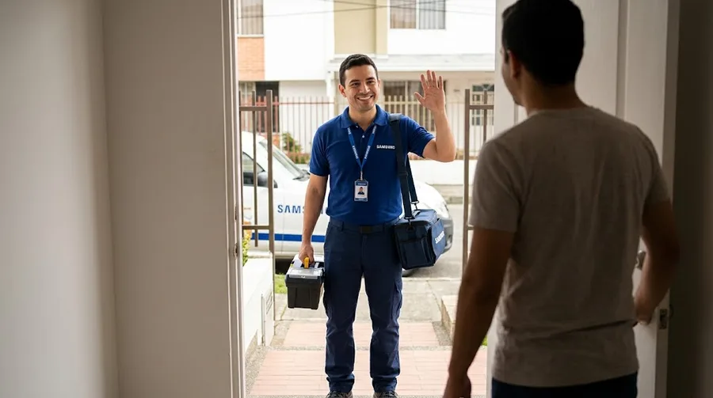
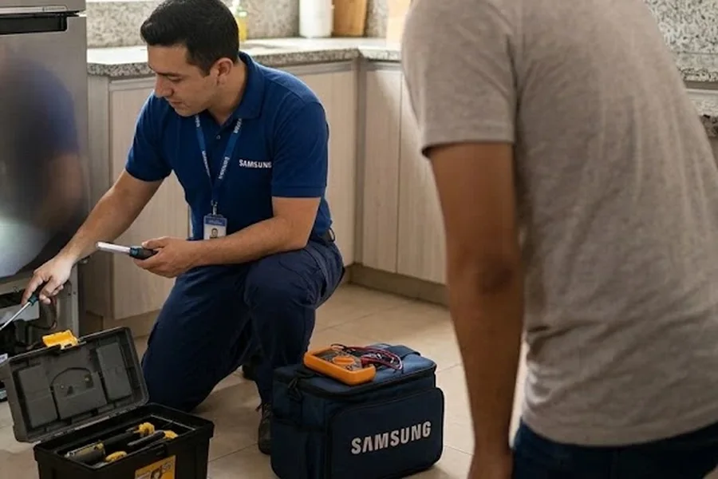

Reparación de electrodomésticos a domicilio
Servicio técnico Samsung El Salvador
Reparación de electrodomésticos Samsung en El Salvador: neveras, refrigeradoras, lavadoras y secadoras, en tu casa. Servicio técnico y centro de servicio Samsung a domicilio, con costo antes de reparar.
- A domicilio en El Salvador
- Gran San Salvador, La Libertad, occidente y oriente
- Te explicamos la falla antes de reparar

Nuestros servicios
Todo lo que hacemos por tus electrodomésticos Samsung en El Salvador.
 Reparación a domicilioReparamos a domicilio los electrodomésticos Samsung más comunes del hogar en El Salvador: refrigeradoras…Ver servicio →
Reparación a domicilioReparamos a domicilio los electrodomésticos Samsung más comunes del hogar en El Salvador: refrigeradoras…Ver servicio → Mantenimiento preventivoUn mantenimiento a tiempo cuesta menos que una reparación grande. Revisamos limpieza, conexiones…Ver servicio →
Mantenimiento preventivoUn mantenimiento a tiempo cuesta menos que una reparación grande. Revisamos limpieza, conexiones…Ver servicio → InstalaciónUna instalación correcta evita fugas, vibración, mal funcionamiento y riesgos con el agua…Ver servicio →
InstalaciónUna instalación correcta evita fugas, vibración, mal funcionamiento y riesgos con el agua…Ver servicio → DiagnósticoNo siempre se sabe qué falla de un equipo. El diagnóstico identifica la causa…Ver servicio →
DiagnósticoNo siempre se sabe qué falla de un equipo. El diagnóstico identifica la causa…Ver servicio →
Tarjetas electrónicasMuchas fallas actuales vienen de la tarjeta de control: el equipo no enciende, se reinicia…Ver servicio → RepuestosSi tu equipo necesita una pieza, primero hay que confirmar cuál es…Ver servicio →
RepuestosSi tu equipo necesita una pieza, primero hay que confirmar cuál es…Ver servicio →Electrodomésticos que reparamos
Elige tu equipo: cada uno tiene sus fallas, servicios y zonas.

Reparación de refrigeradoras Samsung en El Salvador
Reparamos refrigeradoras (neveras) Samsung a domicilio en El Salvador: de congelador superior…
Fallas más consultadas- Refrigeradora Samsung: no enfría
- Refrigeradora Samsung: el congelador se llena de escarcha
- Refrigeradora Samsung: gotea agua dentro de la nevera

Reparación de neveras Samsung en El Salvador
Reparamos neveras Samsung a domicilio en El Salvador: de congelador superior, Side by Side, French Door…
Fallas más consultadas- Refrigeradora Samsung: no enfría
- Refrigeradora Samsung: el congelador se llena de escarcha
- Refrigeradora Samsung: gotea agua dentro de la nevera

Reparación de lavadoras Samsung en El Salvador
Reparamos lavadoras Samsung de carga superior y de carga frontal a domicilio en El Salvador…
Fallas más consultadas- Lavadora Samsung: no centrifuga
- Lavadora Samsung: no desagua (queda agua en la tina)
- Lavadora Samsung: no llena de agua

Reparación de secadoras Samsung en El Salvador
Reparamos secadoras Samsung eléctricas a domicilio en El Salvador: no secan, no calientan, hacen ruido…
Fallas más consultadas- Secadora Samsung: no seca o la ropa sale húmeda
- Secadora Samsung: no calienta
- Secadora Samsung: tarda demasiado en secar
¿Buscas un centro de servicio Samsung en El Salvador?
Con nosotros no llevas el equipo: el técnico va a tu casa.
- Centro de servicio de lavadoras Samsung en El Salvador
- Centro de servicio de secadoras Samsung en El Salvador
- Centro de servicio de refrigeradoras Samsung en El Salvador
- Centro de servicio de neveras Samsung en El Salvador
- Soporte técnico Samsung en El Salvador
- ¿Nevera o refrigeradora Samsung? Es lo mismo
Cobertura: municipios y colonias de El Salvador
Atendemos Gran San Salvador, La Libertad, occidente y oriente. Elige tu municipio o colonia.
Gran San Salvador
- San Salvador Centro
- Colonia Escalón
- San Benito
- Colonia Flor Blanca
- Colonia Médica
- Colonia Miramonte
- Colonia Layco
- Colonia Centroamérica
- Colonia San Francisco
- Colonia Zacamil
- Colonia Metrópolis
- Mejicanos
- Soyapango
- Ilopango
- San Marcos
- Ciudad Delgado
- Cuscatancingo
- Ayutuxtepeque
- Apopa
- Tonacatepeque
- Nejapa
- San Martín
- Colonia Atlacatl
- Colonia Costa Rica
Cómo trabajamos
Vamos hasta donde está tu equipo, lo revisamos y te explicamos antes de reparar.
- 1
Escríbenos
Por WhatsApp al +507 6933 7976. Cuéntanos qué equipo es, la marca, el modelo y la falla.
 2
2Coordinamos la visita
Acordamos día y hora en tu casa, apartamento u oficina de El Salvador.
- 3
Diagnóstico en tu casa
Probamos el equipo, identificamos la causa y te explicamos qué tiene.
- 4
Reparación y prueba
Reparamos y probamos que el equipo quede funcionando.
Guías
Voltaje, limpieza y fallas explicadas para El Salvador.
Servicio técnico Samsung en El Salvador: reparación a domicilio
Servicio Técnico Samsung El Salvador reúne la reparación, el mantenimiento y la instalación de electrodomésticos Samsung en El Salvador: refrigeradoras, neveras, lavadoras, secadoras. Si buscas un centro de servicio Samsung en El Salvador, aquí es distinto: el técnico va a tu casa, revisa el equipo en su lugar, te explica la falla y te da el costo antes de reparar.
Cada falla tiene su propia página con causas probables, qué revisar antes de escribirnos y cuándo conviene pedir al técnico: refrigeradora que no enfría, lavadora que no desagua, lavadora que no centrifuga o secadora que no seca, entre muchas otras.
Atendemos 67 municipios y colonias dGran San Salvador, La Libertad, occidente y oriente del país, como Colonia Escalón, Santa Tecla, Soyapango o Santa Ana. Para pedir el servicio, escribe por WhatsApp al +507 6933 7976 con el modelo del equipo, la falla y tu municipio o colonia; también puedes ver cómo agendar la visita o cómo cotizar una reparación.
Preguntas frecuentes
¿Hacen servicio técnico Samsung a domicilio en El Salvador?
Sí. Vamos a tu casa, apartamento u oficina en El Salvador: San Salvador, La Libertad, occidente y oriente. Escríbenos por WhatsApp con el equipo, el modelo y la falla.
¿Qué electrodomésticos Samsung reparan?
Refrigeradoras, neveras, lavadoras y secadoras.
¿Qué hago si mi equipo está en garantía?
Revisa primero las condiciones de la garantía de fábrica. Si ya venció o necesitas un diagnóstico, escríbenos por WhatsApp.
¿Cuánto cuesta la visita?
Escríbenos al WhatsApp con el equipo, el modelo y la falla; te confirmamos el costo de la visita antes de ir.
¿Dan el costo antes de reparar?
Sí. Primero diagnosticamos, te explicamos la falla y te informamos el costo antes de continuar.
¿Cómo pido el servicio?
Por WhatsApp al +507 6933 7976. Envía marca, modelo, falla, tu municipio o colonia y, si puedes, una foto de la etiqueta y un video corto.
¿Nevera o refrigeradora Samsung: cuál es la diferencia?
Ninguna: son nombres del mismo electrodoméstico. En El Salvador se usa más refrigeradora, pero reparamos ambas igual y a domicilio.
¿Son un centro de servicio Samsung en El Salvador?
Somos un servicio técnico a domicilio para electrodomésticos Samsung en El Salvador: en vez de llevar el equipo a un centro, el técnico va a tu casa. Para condiciones de garantía de fábrica, consulta directamente con el fabricante.
¿Cuánto cuesta la reparación?
Depende de la falla y de la pieza. Después del diagnóstico te damos el costo antes de reparar y tú decides.
¿Qué necesito para pedir el servicio?
Marca y modelo del equipo, la falla que presenta, tu municipio o colonia y, si puedes, una foto de la etiqueta y un video corto.
¿Atienden oriente y paracentral?
Sí: Antiguo Cuscatlán, Merliot, Santa Tecla y otros sectores del país. Escríbenos tu municipio o colonia y confirmamos.
¿Tu electrodoméstico está fallando?
Escríbenos por WhatsApp con la marca, el modelo y la falla. Te orientamos y coordinamos la visita.
Escribir por WhatsApp